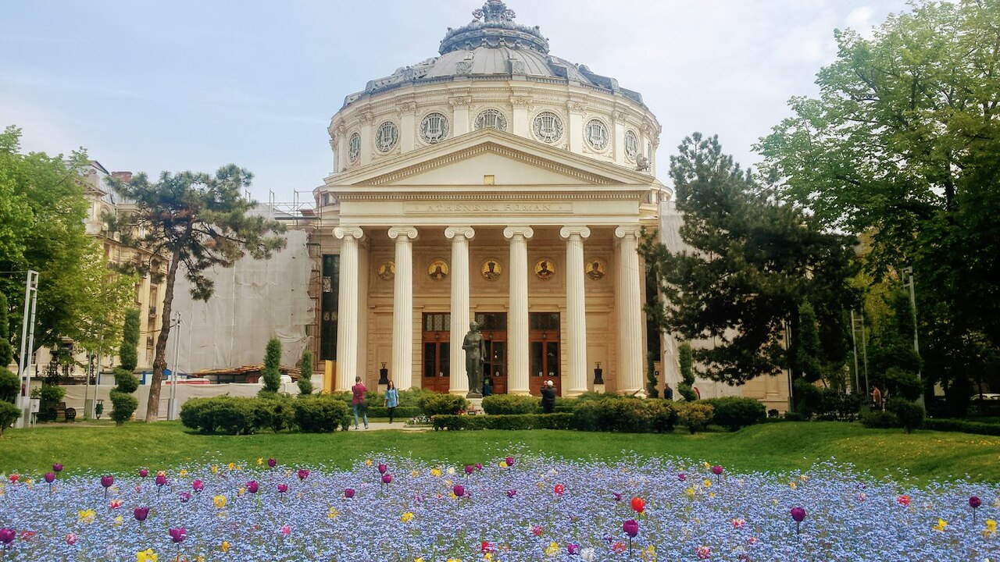

Большой город становится ближе, когда знаешь своих
Какой район выбрать? Куда пойти с детьми? Кто уже ходил к хорошему мастеру или ездил в Синаю? В BucharestUA можно обсуждать жизнь в городе с соседями. Этот сайт — наш журнал и справочник, а живые разговоры происходят в Telegram.
Присоединиться к разговору ↗
О чём поговорим сегодня?
Спросить так, чтобы вам действительно ответили
Вместо: «Где найти мастера?»
Лучше: «Нужен сантехник в Sector 6, поблизости от Drumul Taberei. Требуется заменить смеситель на этой неделе. Кто обращался к специалисту с прозрачной сметой и может поделиться опытом?»
Вместо: «Куда пойти в субботу?»
Лучше: «Мы с ребёнком 3 лет ищем интересное место в Бухаресте на субботу, желательно без долгой дороги из Sector 3. Кто недавно был в музее или на мастер-классе?»
Не публикуйте паспортные данные, номер квартиры, медицинские документы или сведения о ребёнке, по которым его можно узнать. Рекомендации участников — личный опыт, который стоит проверять.
Задать вопрос в Telegram ↗Городская редакция и сообщество
Мы готовим полезные материалы и истории о Бухаресте, но не заменяем официальные службы, врачей или профессиональные консультации. Если вы знаете красивое место, нестандартный маршрут, полезное мероприятие или хотите рассказать о районе, поделитесь идеей в чате. Редакционные материалы должны проходить проверку фактов и прав на фотографии.
Сайт не собирает обращения через публичную форму и не отображает чужие Telegram-сообщения без согласия участников. Для живой беседы переходите в Telegram.